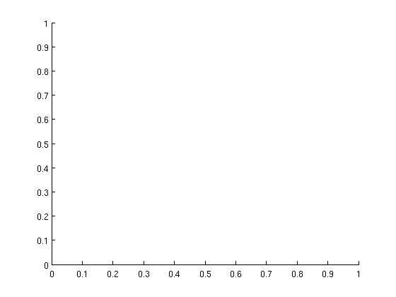
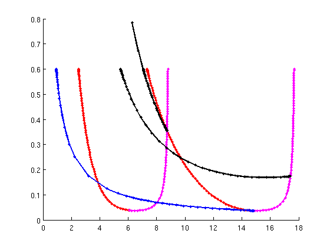
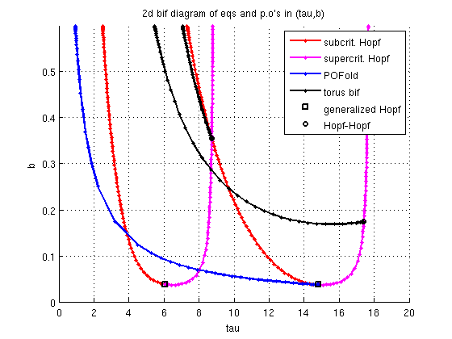

Plot of two-dimensional bifurcation diagram for minimal demo
This script requires to have minimal_demo.html, minimal_demo_stst_psol.html, minimal_demo_extra_psol.html, minimal_demo_extra_nmfm.html to have run beforehand.
(c) DDE-BIFTOOL v. 3.1.1(75), 31/12/2014
Contents
%#ok<*SAGROW> figure(3);clf hold on get_par=@(x,i)arrayfun(@(y)y.parameter(i),x.point);
give super- and subcritical Hopf bifurcations different color
ih=0; for i=1:length(hopfref) ih=ih+1; hopfcrit{ih}=hopfref{i}; hopfcrit{ih}.point=hopfref{i}.point(1:ind_genh(i)); ih=ih+1; hopfcrit{ih}=hopfref{i}; hopfcrit{ih}.point=hopfref{i}.point(ind_genh(i):end); end
bifurcations of periodic orbits
The solutions may switch to equilibria at degenerate points. So we remove solutions with zero amplitude
pobranches={pbranch,trbranch1,trbranch2};
amp=@(x)max(max(x.profile(1:2,:),[],2)-min(x.profile(1:2,:),[],2));
for i=1:length(pobranches)
amps=arrayfun(amp,pobranches{i}.point);
pobranches{i}.point=pobranches{i}.point(amps>1e-4);
end
Plot Codimension-1 bifurcations as curves
branches=[hopfcrit,pobranches]; colors='rmrmbkk'; pl=[]; for i=1:length(branches) pl(i)=plot(get_par(branches{i},indtau),get_par(branches{i},indb),... [colors(i),'.-'],'linewidth',2); end pl=pl([1:2,5:end-1]); lgtext={'subcrit. Hopf','supercrit. Hopf','POFold','torus bif'};
Codimension-2 bifurcations along Hopf bifurcations
plotted as points in the two-parameter plane
for i=1:length(genh) plgenh=plot(genh{i}.parameter(indtau),genh{i}.parameter(indb),... 'ks','linewidth',2); end pl(end+1)=plgenh; lgtext{end+1}='generalized Hopf'; for i=1:length(hoho) plhoho=plot(hoho{i}.parameter(indtau),hoho{i}.parameter(indb),... 'ko','linewidth',2); end pl(end+1)=plhoho; lgtext{end+1}='Hopf-Hopf'; legend(pl,lgtext); xlabel('tau'); ylabel('b'); axis([0,20,0,0.6]); grid on title('2d bif diagram of eqs and p.o''s in (tau,b)')